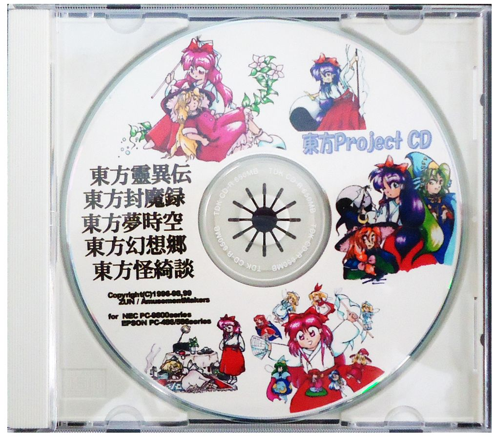
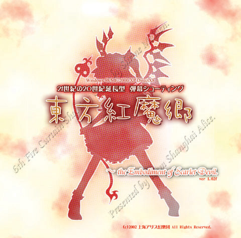
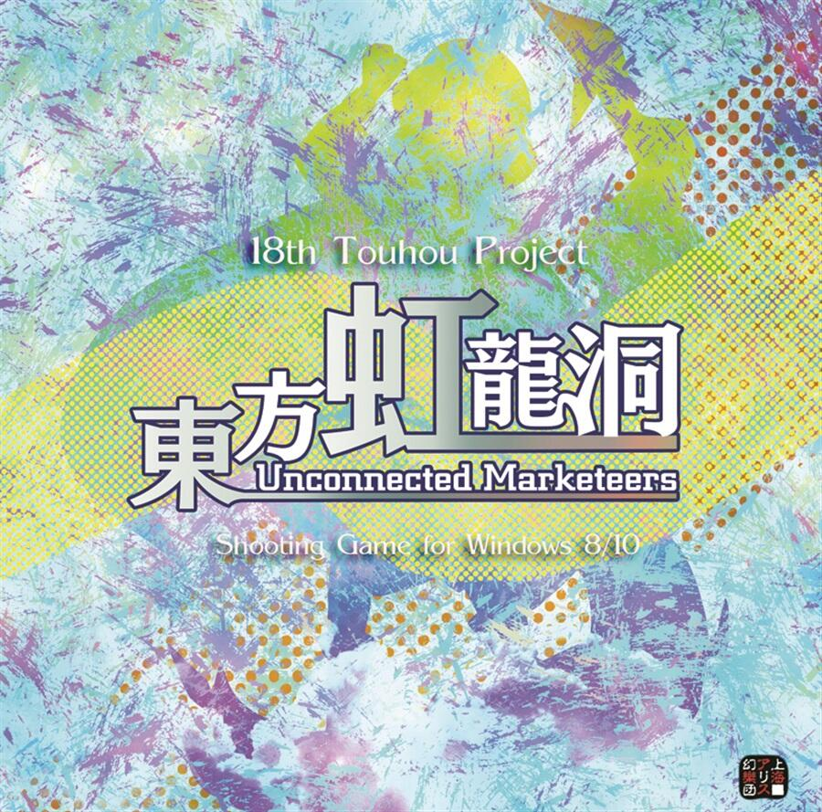

一般来讲官方游戏作品指拥有TH编号的作品。TH即为Touhou Project的意思。
东方的游戏均为同人作品，同人即非商业的含义。
官方游戏分为旧作与新作两大部分，其中新作又分为整数作、非整数作等
旧作，又称黑历史（倾向于一种调侃称呼），指的是1996年至1998年这段时期发表的Th01-Th05五部作品。这五部作品被现在玩家称作“东方旧作”（国内亦称“黑历史”）。
当时ZUN的社团名称为「ZUNSoft」，上海爱丽丝幻乐团还并不存在。
这五作游戏运行在PC-98（一种日本产销的计算机架构，请不要与Windows
98相混淆）上，由于当时PC-98已处于衰退期，这几款游戏也并不出名，但受到日后Windows上新作的影响而重拾注目。目前游戏商品已经绝版，PC-98的硬件也不易取得，但有心的玩家可透过模拟器一睹其风貌。

东方Project CD
类别 整合CD-R 贩售日期 2002年5月
旧作五作收录CD-R。收录了灵异传到怪绮谈的旧作CD-R版。
新作与旧作相对，指的是Th06及之后的作品。
东方系列在停滞了近四年后，于2002年再度更新。神主以新社团「上海爱丽丝幻乐团」的名义发布了东方系列的第6作，也就是新作的开端。
这次不仅社团改变，游戏平台也转移到了Windows上。
游戏整体水准较旧作有大幅度的进步，尤其背景音乐与人物设定有优异的表现，在同人游戏之中是极为出色的作品，也带起许多同人社团的二次创作风潮。从这开始，东方系列在同人领域逐渐占据着越来越重要的地位，一直发展到如今的独占同人界半边天。

TH06 东方红魔乡 ～ the Embodiment of Scarlet Devil.
类别 弹幕射击类游戏 贩售日期 2002年8月11日(Comic Market 62)
东方Project在Windows平台上的第一作（新作第一作），自机为博丽灵梦与雾雨魔理沙。
最新版本为1.02h。

TH18 东方虹龙洞 ～ Unconnected Marketeers.
类别 弹幕射击类游戏 贩售日期 2021年5月4日 （Steam）
本作特色为卡片系统，自机为博丽灵梦、雾雨魔理沙、十六夜咲夜和东风谷早苗。本作保留了成就系统。
最新版本为1.00a。